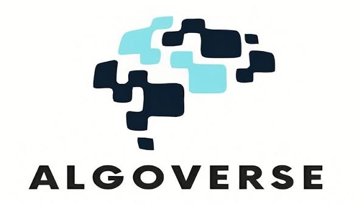
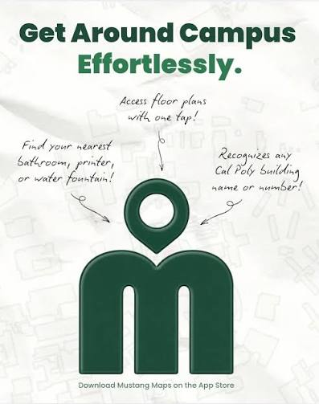
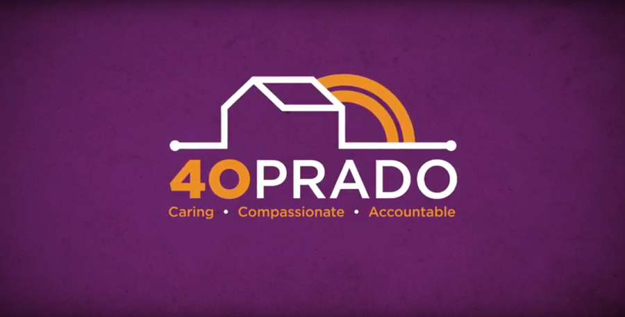

Reinforcement Learning Benchmark
Created a POMDP testbed and reproducible Q-learning and PPO pipelines to distinguish reward misspecification from observation insufficiency.
My stack Python, Gymnasium, Pandas, Q-learning, PPO
Selected work
Projects that span frontend engineering, reinforcement learning, agentic AI, and hardware-enabled access.

Created a POMDP testbed and reproducible Q-learning and PPO pipelines to distinguish reward misspecification from observation insufficiency.
My stack Python, Gymnasium, Pandas, Q-learning, PPO

Built responsive UI features and location classifications for a Cal Poly mapping application for classes, events, facilities, and utilities.
My stack React, TypeScript, Tailwind CSS, HTML/CSS, pytest

Developed an automatic-door system with 40 Prado Homeless Services Center, combining Arduino control software, mechanical modeling, and on-site installation work.
My stack Arduino microcontrollers, control software, mechanical modeling